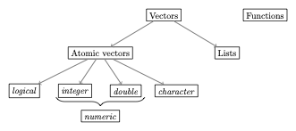

Overview
We already learned that everything in R that exists is an object. You most likely noted that there are different types of objects: 2, for instance, was a number, but assign was a function.1 As you might have guessed, there are many more types of objects. To understand the fundamental object types in R is an essential prerequisite to master more complicated programming challenges than those we have encountered so far. Thus, this post is among those that will introduce you to the most important object types that you will encounter in R.
These data types are summarized in the following figure:
This post will be about the most common types of vectors. See the previous post for a treatment of functions, and the upcoming one for more advanced types of vectors, such as factor, matrix, and data.frame.
Vectors
Vectors are the most important object type in R - almost all data that we will work with in R are vectors of some sort. Within the class of vectors, the most important distinction is that between atomic vectors and lists, which are sometimes also called generic vectors.2 Both atomic vectors and lists consist of one or more other objects. What distinguishes the two is that while atomic vectors are composed only of objects of the same type, lists can comprise objects of different types.
Atomic vectors
This makes it easy to classify atomic vectors in more detail: we usually say that the type of atomic vector is the type of the object it encompasses. Four major types of atomic vectors in this sense exist:
logical(logical values): there are only two relevant logical values:TRUEundFALSE3integer(whole numbers): this type should be self-explanatory. Less intuitive is the rule that in order to define an integer inRyou need to type the number followed by the letterLsuch thatRinterprets the number as an integer.4 Examples are1L,-400Lor10L.
double(decimal numbers): these should be self-explanatory as well. Examples are1.5,0.0, or-500.32.- Whole and decimal numbers are often summarized in the category
numeric. However, the use ofnumericis almost always confusing, and many functions show counter-intuitive behavior when this category is used. I recommend you to never use it. character(words): these can contain all kinds of tokens and are characterized by the fact that they always start and end with"(or'). Examples would be"Hello","500"or"1_2_Three".
As indicated above, an atomic vector only comprises elements of the same type. In this context, we should mention, however, the at first sight ‘strange’ data type NA, which denotes a missing value:5 whenever an element of a vector is missing, e.g. when the vector is used to store observations of subjects that have participated in an experiment, and for some subjects the observation is missing, we will use NA.6
Testing and coercing types
In the following we will study the different types of atomic vectors and their typical behavior in more detail. But before doing so we should introduce the function typeof(): it helps us to identify the type of an object in the first place. To see how, lets call the function with the object (or the name of the object) we are interested about:
typeof(2L)[1] "integer"x <- 22.0
typeof(x)[1] "double"There is also a family of functions that allows us to test whether an object is actual of a certain type or not. The general syntax here is is.*(). For instance:
x <- 1.0
is.integer(x)[1] FALSEis.double(x)[1] TRUEThis function always returns an object of type logical:
y <- is.double(x)
typeof(y)[1] "logical"We can also try to transform objects from one type into another. We call this process ‘coercion’ an the general syntax is as.*()*. For instance:
x <- "2"
print(
typeof(x)
)[1] "character"x <- as.double(x)
print(
typeof(x)
)[1] "double"Such a transformation is, however, not always possible:
as.double("Hello")Warning: NAs introduced by coercion[1] NASince R does not know how to turn the word ‘Hello’ into a decimal number, it transforms it into a ‘missing value’ - NA.
For the basic types discussed above there is a logical hierarchy of feasible transformations: logical → integer → double → character, meaning that you can always transform a decimal number into a word, but not vice versa.
Transgression: Why change the types of objects anyway? Data types are extremely important for a programming language because otherwise it would remain unclear how mathematical operations could be applied to different objects such as numbers or words. You will transform objects yourself especially when you want to use a certain operation that is only defined for a certain type of object, and the object you are dealing with has been stored as a different type. This can happen, for example, when you read in data or translate words into numerical values yourself. If unexpected errors occur in your code with cryptic error messages, it is always a good idea to check the types of the objects used and transform them if necessary.
x <- 2
y <- as.character(x)
print(y)[1] "2"z <- as.double(y) # This works
print(z)[1] 2k <- as.double("Hallo") # This does not workWarning: NAs introduced by coercionprint(k)[1] NAWhen transforming logical values, TRUE counts as 1 and FALSE as 0, a fact that will come in handy later on:
x <- TRUE
as.integer(x)[1] 1y <- FALSE
as.integer(y)[1] 0Since it is not always clear when R issues a warning for transformations that are incompatible with the hierarchy just introduced and when it does not, you should always be cautious!
Moreover, transformations might change the properties of the transformed objects implicitly in unexpected ways. For instance, a transformation from a decimal number to a whole number can lead to unexpected rounding behavior:
x <- 1.99
as.integer(x)[1] 1Another example is the following:
z <- as.logical(99)
print(z)[1] TRUESuch implicit changes of the object properties do not necessary come with a warning message, so one should always be careful when transforming objects!
In many cases, functions do the necessary transformations of their arguments automatically. In most cases this is very practical:
x <- 1L # Integer
y <- 2.0 # Double
z <- x + y
typeof(z)[1] "double"But it can be dangerous in some cases as well.
When adding up logical values they are transformed to numbers:
x <- TRUE
y <- FALSE
z <- x + y # TRUE counts as 1, FALSE as 0
print(z) [1] 1This is useful if you want to know, for instance, how many elements of a vector meet a certain logical criterion:
x <- c(1,2,3,4,5)
sum(x > 3)[1] 2In all these cases it is very important to stay informed about the types of objects you are dealing with. To help you out, the following table contains an overview over the most important transformation and test functions:
| Type | Test | Transformation |
|---|---|---|
| logical | is.logical |
as.logical |
| double | is.double |
as.double |
| integer | is.integer |
as.integer |
| character | is.character |
as.character |
| function | is.function |
as.function |
| NA | is.na |
NA |
| NULL | is.null |
as.null |
A final remark on scalars: with scalar we usually refer to ‘single numbers’, such as 2. There is no such concept in R: 2 is a vector with one element (or: of length 1). Thus, we do not distinguish the type of a vector with or more than one elements.
Note: As you might have guessed already, we use the function c() to create longer vectors:
x <- c(1, 2, 3)
x[1] 1 2 3We can also use this function to concatenate vectors:
x <- 1:3 # Shortcut for: x <- c(1, 2, 3)
y <- 4:6
z <- c(x, y)
z[1] 1 2 3 4 5 6Since atomic vectors can only contain objects of the same type, one might expect the following code, which tries to concatenate objects of different types, to produce an error:
x <- c(1, "Hallo")But this is not what happens! R transforms the objects according to the hierarchy discussed above:
logical → integer → double → character. Due to the absence of errors or warning messages, such operations are a regular source for mistakes.
Note: The length of a vector corresponds to its numbers of elements. We can ‘measure’ its length using the function length():
x = c(1, 2, 3)
len_x <- length(x)
len_x[1] 3Transgression: How large can an integer become? In R, objects of type
integerare stored as 32-bit files. This means that for each singleinteger, 32 bits of storage are available on your computer. This implies that really large numbers cannot be stored as integers, simply because the 32 bits are not sufficient:
x <- 2147483647L
typeof(x)[1] "integer"y <- 2147483648L
typeof(y)[1] "double"As you can see, the largest number that we can store as 32-bit integer is 2147483647. Larger numbers must be stored as
double. The drawback of saving numbers in this type is, however, the risk of a loss of precision. If you want to avoid this you could try to save an integer as a 64 bit integer. This possibility has been added to R later to save large numbers as integers (something that happens faster than you think). To do so we must use the package7bit64:
z <- bit64::as.integer64(2147483648)
bit64::is.integer64(z)[1] TRUEBecause this is a data type that has been added to
Rlater, several functions do not work with 64-bit integers if the packagebit64is not installed. Moreover, several standard functions return very irritating outputs:
typeof(z)[1] "double"For this reason, and because
bit64is not part of the standard installation ofR, you should avoid storing large numbers asinteger64whenever possible. Very large numbers should be stored asdoubleor, when precision is a serious issue, you should scale them down and then save them asinteger.
Logical operations
The logical values TRUE and FALSE are often the result of logical operations, such as ‘Is 2 larger than 1?’. Such logical operations occur very frequently and its a good idea to familiarize yourself with the logical operators. You can find an overview in the following table:
| Operator | Function in R | Example |
|---|---|---|
| larger | > |
2>1 |
| smaller | < |
2<4 |
| equal | == |
4==3 |
| larger or equal | >= |
8>=8 |
| smaller or equal | <= |
5<=9 |
| not equal | != |
4!=5 |
| and | & |
x<90 & x>55 |
| or | | |
x<90 | x>55 |
| either or | xor() |
xor(2<1, 2>1) |
| not | ! |
!(x==2) |
| is true | isTRUE() |
isTRUE(1>2) |
The result of such logical operations is always a logical value:
x <- 4
y <- x == 8
typeof(y)[1] "logical"You may also test longer vectors:
x <- 1:3
x<2[1] TRUE FALSE FALSETests can also be chained:
x <- 1L
x>2 | x<2 & (is.double(x) & x!=0)[1] FALSESince many mathematical operations interpret TRUE as 1, it is easy to check how often a certain condition is met:
x <- 1:50
smaller_20 <- x<20
print(
sum(smaller_20) # How many elements are smaller then 20?
)[1] 19print(
sum(smaller_20/length(x)) # Whats the share of these elements?
)[1] 0.38Vectorization
The chained operation we just saw is an example for vectorizing an operation. This means that the same operation is applied to many elements, all of which are concatenated as a vector. For instance, if you want to compute the square root of the numbers 5, 6 and 7 you could do:
sqrt(5)[1] 2.236068sqrt(6)[1] 2.44949sqrt(7)[1] 2.645751Or you vectorize the operation:
sqrt(c(5,6,7))[1] 2.236068 2.449490 2.645751Vectorizing operations is very useful since it speeds up the computations considerably. Vectorized operations are far more efficient and faster than applying the operation to each element of the vector separately. Thus, whenever you need to apply a certain operation more than once you should always think about using vectorization.8
More on words
Words are distinguished by the fact that their beginning and their end gets indicated by the symbol ' or ":
x <- "Hello"
typeof(x)[1] "character"y <- 'Bye!'
typeof(y)[1] "character"Just as other kinds of atomic vectors, they can by concatenated using c():
z <- c(x, "und", y)
z[1] "Hello" "und" "Bye!" A useful function in this context is paste(), which transforms and combines elements of several vectors:
x <- 1:10
y <- paste("Try nb.", x)
y [1] "Try nb. 1" "Try nb. 2" "Try nb. 3" "Try nb. 4" "Try nb. 5"
[6] "Try nb. 6" "Try nb. 7" "Try nb. 8" "Try nb. 9" "Try nb. 10"The function paste() also accepts an optional argument sep, which allows us to specify a token that should be placed between the elements to be combined (the default is sep=" "):
day_nr <- 1:10
x_axis <- paste("Day", day_nr, sep = ": ")
x_axis [1] "Day: 1" "Day: 2" "Day: 3" "Day: 4" "Day: 5" "Day: 6" "Day: 7"
[8] "Day: 8" "Day: 9" "Day: 10"*Note**: Here we have an example of what is called ‘recycling’. since the vector
c("Day")was shorter than the vectorday_nr,c("Day")is simply copied so that the operation withpaste()makes sense. Recycling is useful, but sometimes it can be harmful, namely when you think that you are using two vectors of the same length, but this is actually not the case. In such a case recycling leads to the fact that no error message is printed and the fact that the two vectors are not of the same length remains unnoticed An example of this is the following code, in which the intention is clearly to connect all weekdays to numbers and one weekday was simply forgotten:
days <- paste("Tag ", 1:7, ":", sep="")
day_names <- c("Monday", "Tuesday", "Wednesday", "Thursday", "Friday", "Saturday")
paste(days, day_names)[1] "Tag 1: Monday" "Tag 2: Tuesday" "Tag 3: Wednesday" "Tag 4: Thursday"
[5] "Tag 5: Friday" "Tag 6: Saturday" "Tag 7: Monday" Missing values and NULL
As indicated above, missing values are encoded as NA. This is particularly useful in statistical contexts, where are particular element of a vector cannot simply be removed if it is unavailable.
Example: The vector
xcontains a logical value that indicates whether a person has correctly answered the question on a questionnaire. If the person did not answer the third question on the questionnaire, this should be indicated byNA. Simply omitting the value makes it impossible to determine afterwards which question the person did not answer.
Most operations that get NA as an input will also give NA as an output, because it is unclear what the result of the operation would be for different values for for the missing value:
5 + NA[1] NAThe only exception is an operation that yields a certain value completely independent from what you would substitute for NA:
NA | TRUE # Always TRUE, no matter what you substitute for NA[1] TRUETo test whether a vector x contains missing values you should always use the function is.na, never x==NA:
x <- c(NA, 5, NA, 10)
print(x == NA) # Unclear since not clear whether all NA must stand for the same value[1] NA NA NA NAprint(
is.na(x)
)[1] TRUE FALSE TRUE FALSEWhenever an operation yields a value that cannot be defined, the result is not NA but NaN (not a number):
0 / 0[1] NaNAnother special element is NULL. NULL is in fact a data type in itself (i.e. it is not a vector), but in practice its best thought of as a vector of length zero:
x <- NULL
length(x)[1] 0NULL is frequently used to indicate that something does not exist. An empty vector, for instance, is NULL:
x <- c()
xNULLlength(x)[1] 0This is different to a vector with one (or more) missing elements:
y <- NA
length(y)[1] 1When you define your own functions, you might use NULL as the default value for optional arguments. We will learn about such more advanced strategies later in this course. For now, its best to think of NULL as an vector of length zero.
Indexing and replacement
We can extract single elements of a vector using squared brackets:
x <- c(2,4,6)
x[1][1] 2This also allows us to modify specific elements:
x <- c(2,4,6)
x[2] <- 99
x[1] 2 99 6But we can also extract more than one element:
x[1:2][1] 2 99Negative indices eliminate the respective elements:
x[-1][1] 99 6To get the last element of a vector you might combine this idea with the function length():
x[length(x)][1] 6Useful functions when working with atomic vectors
Here we shall mention a few functions that are particularly useful in the context of atomic vectors,9 especially when it comes to producing such vectors or to perform arithmetic operations with them.
Creating atomic vectors:
A sequence of whole numbers is something that we use very frequently. To create such sequences, the shortcut : comes in handy:
x <- 1:10
x [1] 1 2 3 4 5 6 7 8 9 10y <- 10:1
y [1] 10 9 8 7 6 5 4 3 2 1To build more complex sequences we can use seq(), which in its simplest case is equivalent to ::
x <- seq(1, 10)
print(x) [1] 1 2 3 4 5 6 7 8 9 10The function seq(), however, allows for a number of useful optional arguments. For instance, by allows us to control the space between the numbers:
y <- seq(1, 10, by = 0.5)
print(y) [1] 1.0 1.5 2.0 2.5 3.0 3.5 4.0 4.5 5.0 5.5 6.0 6.5 7.0 7.5 8.0
[16] 8.5 9.0 9.5 10.0If we want to specify the desired length of the resulting vector and let R choose the necessary space between the elements, we may use length.out:
z <- seq(2, 8, length.out = 4)
print(z)[1] 2 4 6 8And if we want to create a vector with the length as another vector, the argument along.with comes in handy. This is often used for creating index vectors.10 In such a case we do not have to specify the index numbers directly:
z_index <- seq(along.with = z)
print(z_index)[1] 1 2 3 4Another common task is to repeat a certain vector. This can be done with rep():
x <- rep(NA, 5)
print(x)[1] NA NA NA NA NAOperations
There are a number of operations that we use very frequently together with vectors. Often we are interested in the length of a vector. For this we can use the function length():
x <- c(1,2,3,4)
length(x)[1] 4If we are looking for the largest and smallest value of a vector we can use min() and max():
min(x)[1] 1max(x)[1] 4Both functions (and many more similar functions) have the optional argument na.rm, which can be either TRUE or FALSE. In the case of TRUE, all NA values are removed before the operation gets applied:
y <- c(1,2,3,4,NA)
min(y)[1] NAmin(y, na.rm = TRUE)[1] 1The mean or the variance/standard deviation of the elements can be computed with mean(), var(), and sd(), all of which have also the optional argumentna.rm:
mean(x)[1] 2.5var(y)[1] NAvar(y, na.rm = T)[1] 1.666667Finally, we often want to compute the sum or the product of all the elements of the vector. Here the functions sum() and prod() are useful:
sum(x)[1] 10prod(y, na.rm = T)[1] 24Lists
In contrast to atomic vectors, lists can contain objects of different types. We create lists via the function list():
l_1 <- list(
"a",
c(1,2,3),
FALSE
)
typeof(l_1)[1] "list"l_1[[1]]
[1] "a"
[[2]]
[1] 1 2 3
[[3]]
[1] FALSELists can become very complex. The function str() (short for “structure”) helps us to get a quick overview over a list and its elements:
str(l_1)List of 3
$ : chr "a"
$ : num [1:3] 1 2 3
$ : logi FALSEWe can name the elements of lists:11
l_2 <- list(
"first_element" = "a",
"second_element" = c(1,2,3),
"third_element" = FALSE
)We can retrieve the names of all elements of the list with names():
names(l_2)[1] "first_element" "second_element" "third_element" There are two very important differences in the handling of vectors and lists:
- Vectorization does not work for lists
- Indexing works differently
The first issue can be illustrated easily:
vec_expl <- c(1,2,3)
list_expl <- list(1,2,3)
sqrt(vec_expl)[1] 1.000000 1.414214 1.732051But:
sqrt(list_expl)Error in sqrt(list_expl): non-numeric argument to mathematical functionThe second issue is due to the more complex structure of lists. For vectors we extracted single elements via [. For lists, there is a difference between [ and [[. The former always returns a list:
l_1[2][[1]]
[1] 1 2 3The second then returns a vector and is more similar to the behavior of [ in the context of atomic vectors:
l_1[[2]][1] 1 2 3To extract an element of this vector we can chain the brackets:
l_1[[2]][3][1] 3We can also extract elements by their name:
l_2[[1]][1] "a"l_2[["first_element"]][1] "a"Lists are fundamental to many more complex structures that we will encounter later. They are more flexible than atomic vectors, but this flexibility also makes them more difficult to use and less efficient for tasks where this flexibility is not needed. As a rule of thumb, whenever you can represent something as an atomic vector, you should do so. You should always have a good reason for using lists!
Footnotes
In fact, we will learn below that
2is not really a number, but a vector or length 1. Only in a next step,2counts as a ‘number’, or, more precisely as a ‘double’.↩︎The only object type that is of relevance to us aside these two is
NULL. We will learn about it during the end of this post.↩︎While you can abbreviate the two with
TandF, respectively, I recommend against using these sometimes ambiguous abbreviations.↩︎This syntax has historical reasons: when the type
integerwas introduced inR, the developers were guided by the typelong integerof the programming languageC. InCthe suffix for such an integer was ‘l’ or ‘L’. The R developers just transferred this practice intoR, only they did not use ‘i’ to avoid a possible confusion between ‘l’ and ‘i’, which look very similar in many fonts (the suffix ‘i’ inRis used for the imaginary component of complex numbers).↩︎In principle there are different kinds of missing values, such as
NA_integer_orNA_character_, but they are irrelevant in practice: anyNAvalue in an atomic vector automatically ‘mimics’ the type of the atomic vector.↩︎NULLon the other hand, is used to represent an absent vector, not an absent element of a vector. We will come back toNULLduring the end of the post.↩︎If you are not sure what a package is, recap the last chapter of the post on first steps in R.↩︎
We learn more about this later in the course when delving into the topic of iteration.↩︎
For many common tasks there is already a predefined function in R. The easiest way to find them is by googling↩︎
An index vector
xto any vectorywithNelements contains the integers from 1 toN. The nth value of x thus corresponds to the index of the nth value ofy.↩︎We can actually also do this with vectors, but it is more common in the context of lists.↩︎